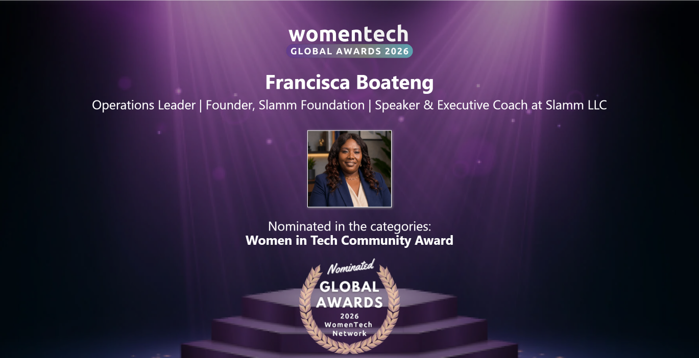
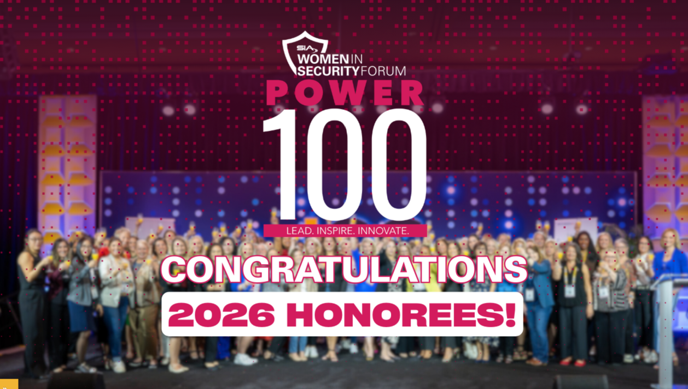
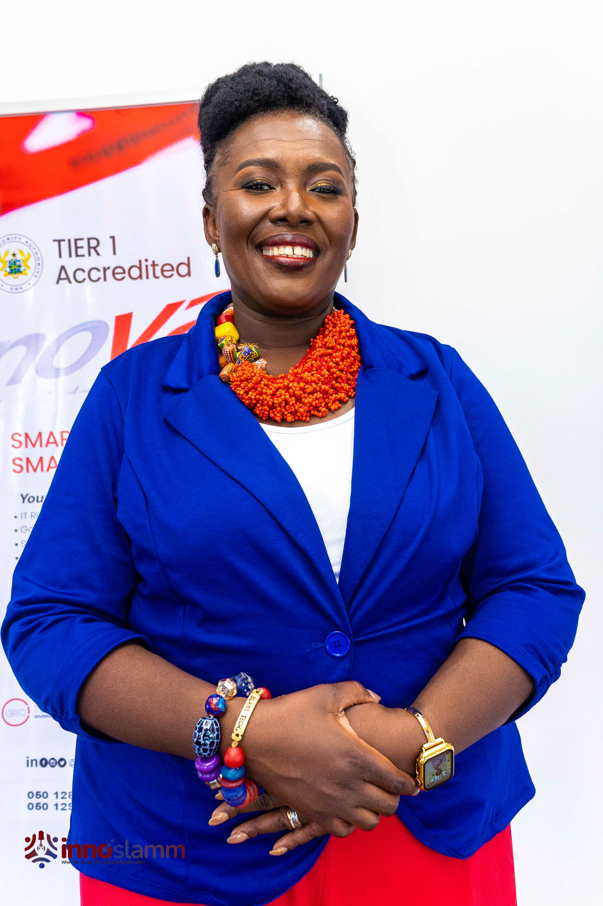

Slamm Foundation
Technology access.
Practical digital and cybersecurity learning pathways designed to widen participation and opportunity.
Visit Slamm FoundationPractical digital and cybersecurity learning pathways designed to widen participation and opportunity.
Visit Slamm FoundationLong-term work around books, libraries and leadership development for young people.
Visit Read 2 LeadContributing to conversations and initiatives that strengthen representation, confidence and pathways into cybersecurity.

Women in Tech Community Award.

Named among the Security Industry Association’s 2026 honorees.
Recognized for advancing inclusion and access in cybersecurity.

Across her work, Francisca keeps returning to access, confidence, visibility and the structures that help more people participate fully.